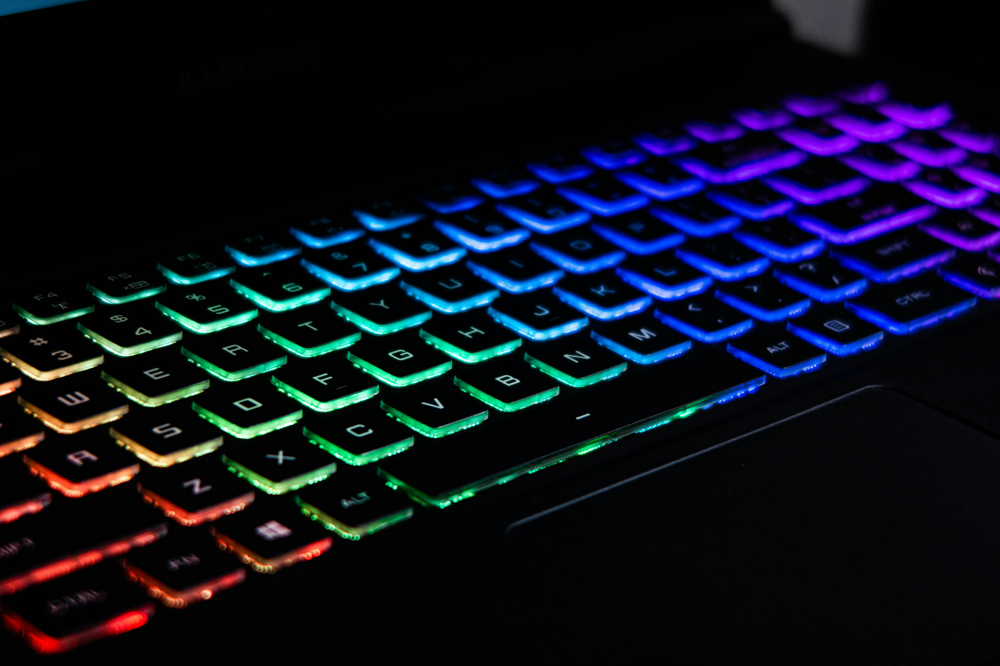

Performance tests, pros/cons, specs, and whether it’s worth your money.
The EPOMAKER x AULA F75 is a viral sensation because it bridges the gap between cheap plastic gaming boards and $200+ enthusiast keyboards. With premium internal materials and a flexible gasket mount, it delivers a sound profile that mainstream gaming brands simply cannot match.
Most gaming keyboards sound hollow and metallic. The AULA F75 uses five layers of acoustic foam including IXPE switch pads and PORON case foam to absorb vibration and create a deep, marbly, “thocky” sound signature.
With a 4.7-star average on Amazon, users praise the premium weight, smooth switches, and enthusiast-level acoustics. The only critique is the gamer-style keycap font — but the board is fully hot-swappable, so upgrading keycaps is easy.
| Feature | Details |
|---|---|
| Switch Type | LEOBOG Reaper Linear |
| Connectivity | 2.4GHz, Bluetooth 5.0, USB‑C |
| Layout | 75% with volume knob |
| Hot-Swap | Yes |
| Battery | 4000mAh |
| Weight | 1.2kg |
The AULA F75 delivers enthusiast-level sound and feel at a price gaming brands can’t touch. If you want a premium typing experience, deep acoustics, and tri-mode wireless without spending $200+, this is the best keyboard of 2026.
Upgrade your setup with enthusiast-level sound and performance.
Check Price on Amazon